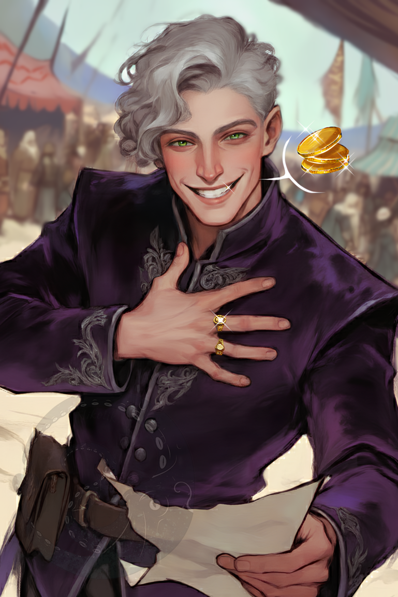
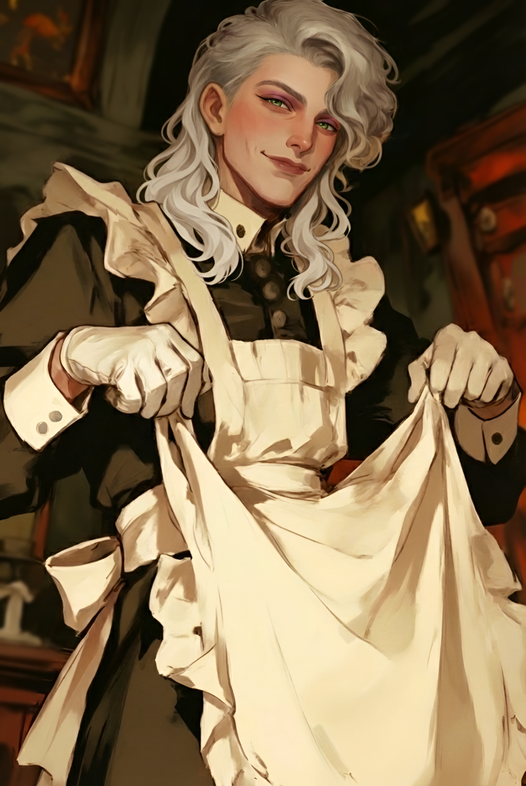
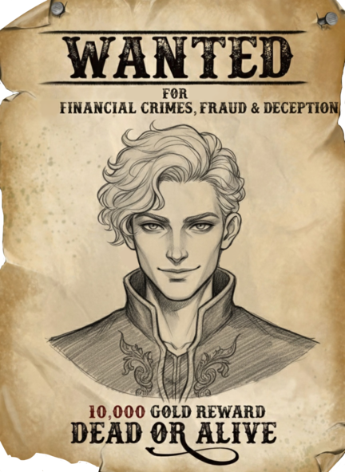
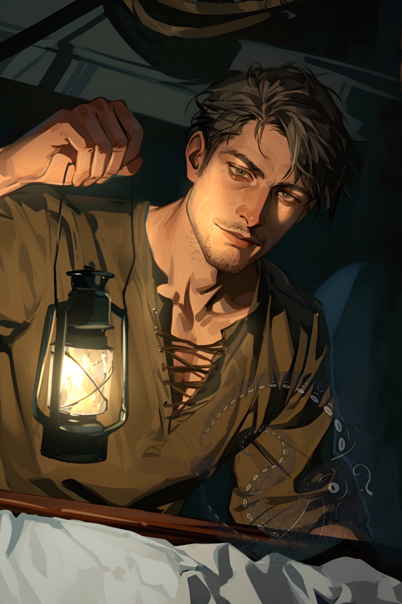
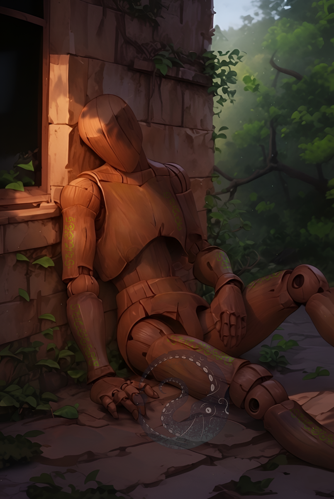

Random Characters
Notable NPCs not tied to specific factions.



Hera von Goldmind — Con Artist
A con artist who treats life as a stage and every accusation as an opening line. Charming, slippery, relentlessly optimistic. Survives through performance. Raised in the slums of Whitevale, reinvented himself as a "noble" merchant. His fabricated lineage supports his real estate schemes, including the infamous "New Haven" swamp scandal.

Aldor — Lighthouse keeper
Aldor is the crippled keeper of the Black Lighthouse. He is neither a mage nor a hero, but simply a man whose duty it is to tend the fire in the lighthouse's enormous bowl.

Malakai — Trapped soul
Malakai was, in the past, an ancient mage, and now is a soul trapped within the body of a wooden doll. He is narcissistic, self-satisfied, loud, and can't remembers nothing of himself save that he is devilishly powerful.